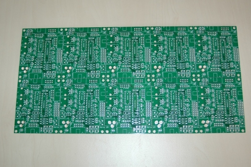
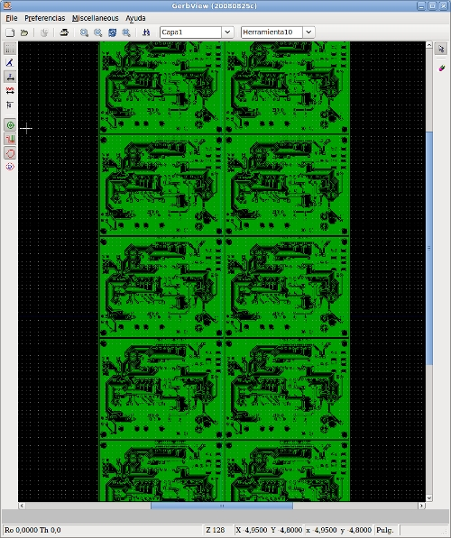

El pasado 28 de Mayo nos llegaron los PCBs de la Skypic que fabricamos en China. La fabricación la hemos hecho en pcbcart.com y los resultados han sido muy buenos.
La última versión de la Skypic fue diseñada con el Kicad. Los ficheros Gerber están panelizados, de manera que en cada panel hay 10 skypics
